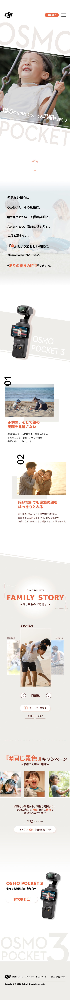
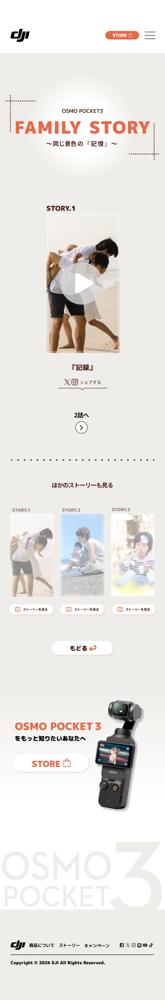
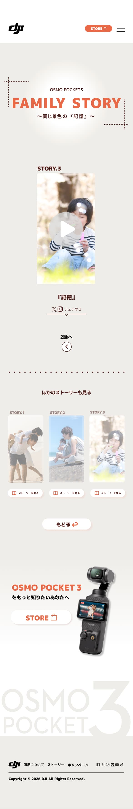

作品概要
目的
一般層における認知拡大・売上向上の高いSNS連動型スペシャルサイトの制作
ターゲット
上手に撮りたいではなく、その場に一緒にいたい、生活の日々を記録を始めたいと考えてる、子どもを持つ30代の親。
担当
競合分析、ユーザー調査、コンセプト立案を担当しました。 完成デザインはチームメンバーが制作しています。
制作期間
2週間
使用ツール
figma
工夫した点
他社のサービスを比較し、 商品の魅力だけでなく、 どのような体験価値を伝えているのかという視点で分析しました。 また、コピーやビジュアル、情報の見せ方を整理し、 それぞれの特徴や強みを分かりやすくまとめることを意識しました。
学んだこと
競合分析を通して、 商品の機能だけではなく、 ユーザーが得られる体験や感情まで含めて伝えることの重要性を学びました。 また、各社の伝え方を比較することで、 コンセプトに合わせた情報設計や表現方法の違いを理解することができました。
完成デザイン
神社巡りと謎解きを組み合わせ、
楽しみながら神社の魅力を知ることができる探索型アプリをデザインしました。



